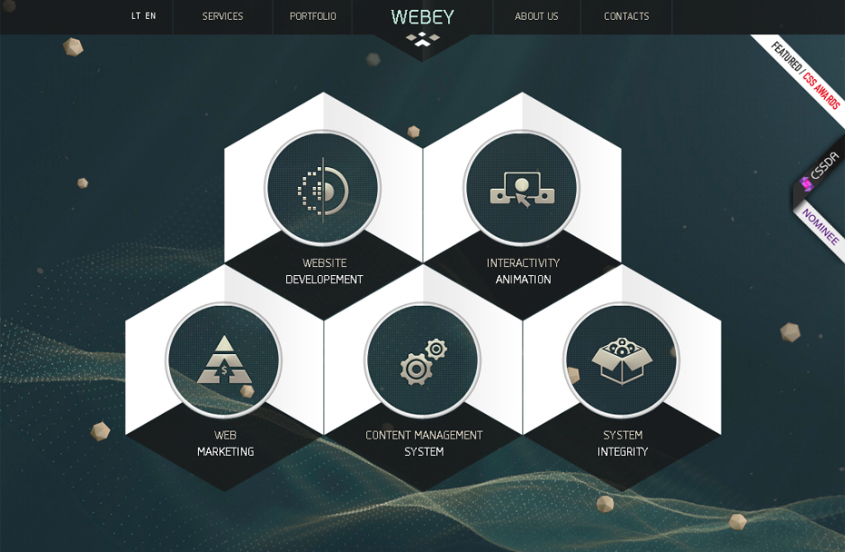
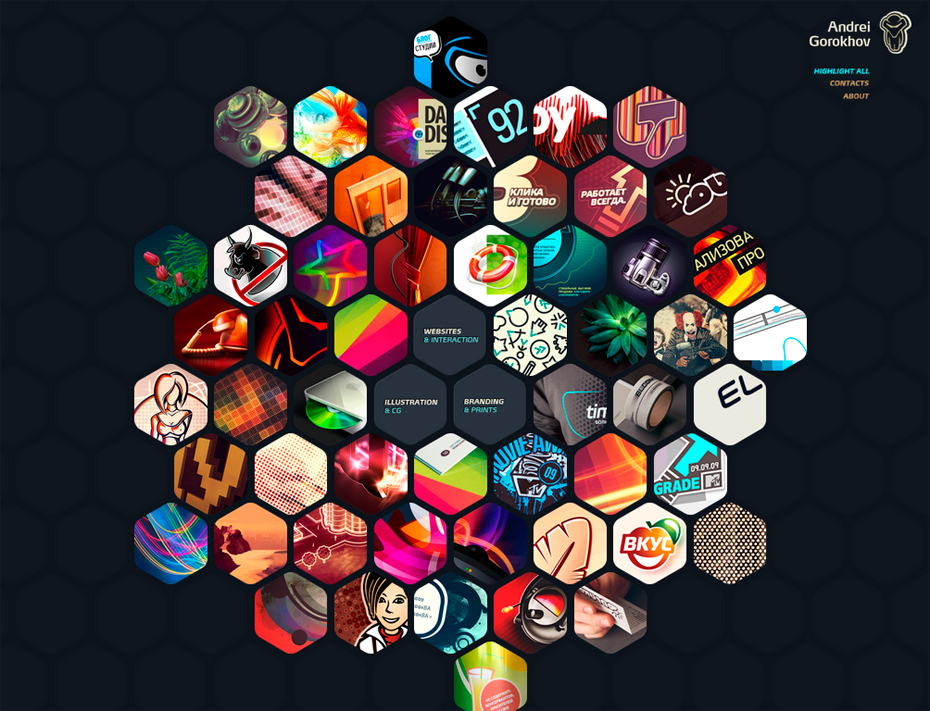
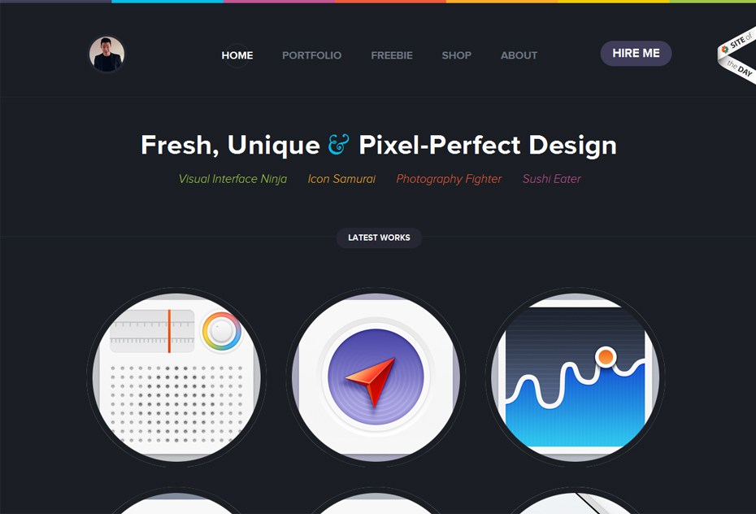
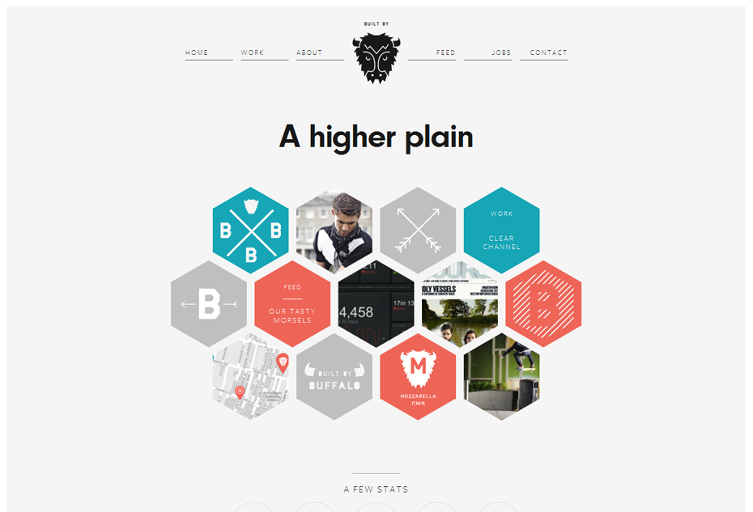
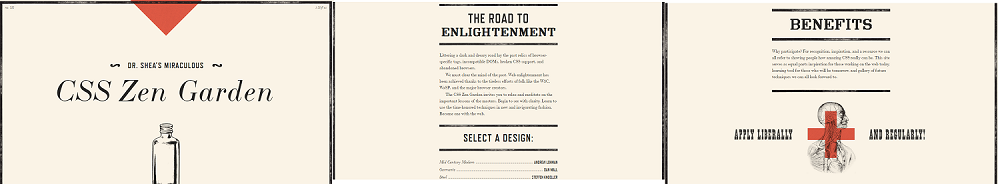
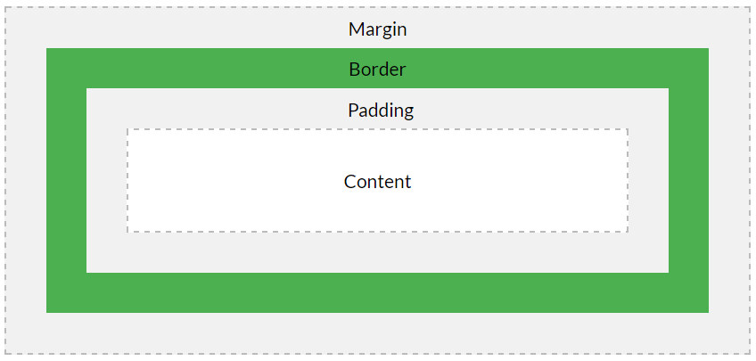

Design & Structure WishList
Different Design or Structure features that I may want to include in my designs next week :
- 
Idea 1: I really like the way they have displayed the various catagories in a hive like fashon. I'm thinking I could do something similar for the various catagroies I will be blogging about.
- 
Idea 2: Similar to idea 1, this hive structure really is nice to look at. I like the way they have designed it to compliment the background and have used images to represent the topic of the links.
- 
Idea 3: In this approach we have circles instead of hexagons arranged in a grid like format. This gives a clean, easy look to the user and I found it really effective.
- 
Idea 4: With this design my main focus is on the navigation, I think it's simplistic but AWESOME! It's easy to use and is something unique. I could mix this idea with the navigation from idea 1 as these are both very similar and see what works for me.
- 
Idea 5: Least but not least! This is something that I have'nt seen before, The page has been designed like a magazine / book and I think it's really effective. I was thinking of taking the border / paper aspect of it to give my blog an authentic feel to it.
Can you think of an analogy to describe HTML, CSS and the DOM?
It's just like a building a house! Here let me explain...
HTML :
This is the foundations. With this you create the floors, walls, doors and roof (let just keep it simple).
CSS :
This is the Design. With this you will decide what colour you want the walls, how big the rooms are and what rules apply to each room.
DOM :
This is the managment. With this you will decide in what logical order you will put everything together in to make sure you dont miss anything out and to make sure everything fits.
What is meant by boxifying design?
To spit all the elements of a page up in to their sections, as webpages have many different things on them it is best to get your mockup out and draw out the sections that you are going need. This is so when it comes to actually coding the site structure you dont miss anything out.
What is the box model?
Each HTML element should be thought of as a box, each box had 4 main parts to it. There is the actual content that sits in the middle, wrapped around that is the padding, then comes the border and lastly wrapped around it all is the margin. This structure is refered to as the Box Model, I often find it hard to understand text so below is a diagram to help you visualize it.
